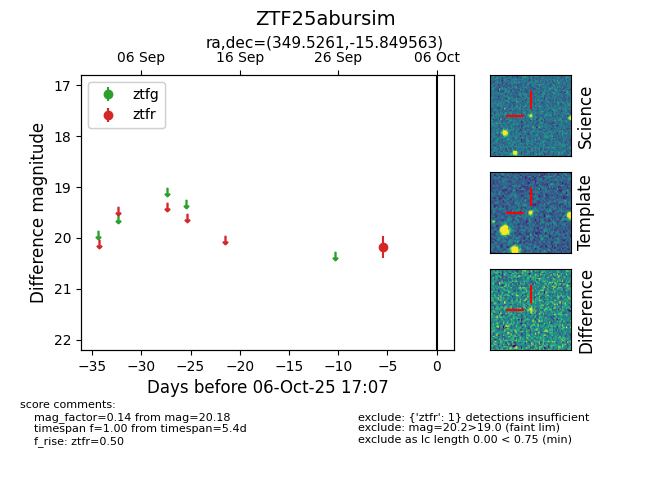

FINK: ZTF25abursim
Lasair: ZTF25abursim
ALeRCE: ZTF25abursim
ZTF25abursim (ztf,fink)
equatorial (ra, dec) = (349.5261,-15.84956)
galactic (l, b) = (55.6731,-65.59776)

last ztfr=20.18
1 ztfr detections